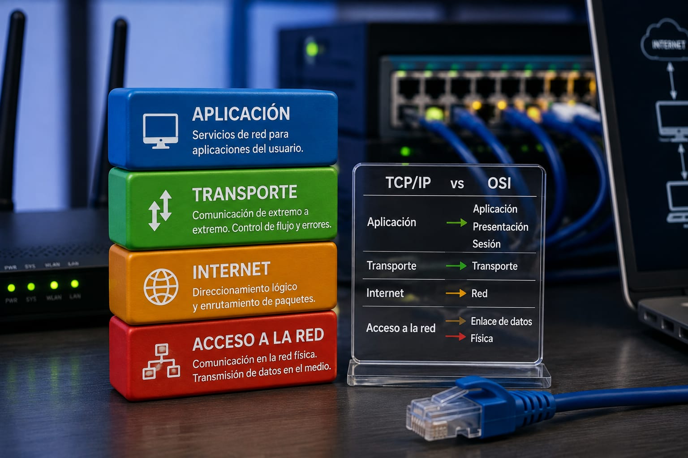
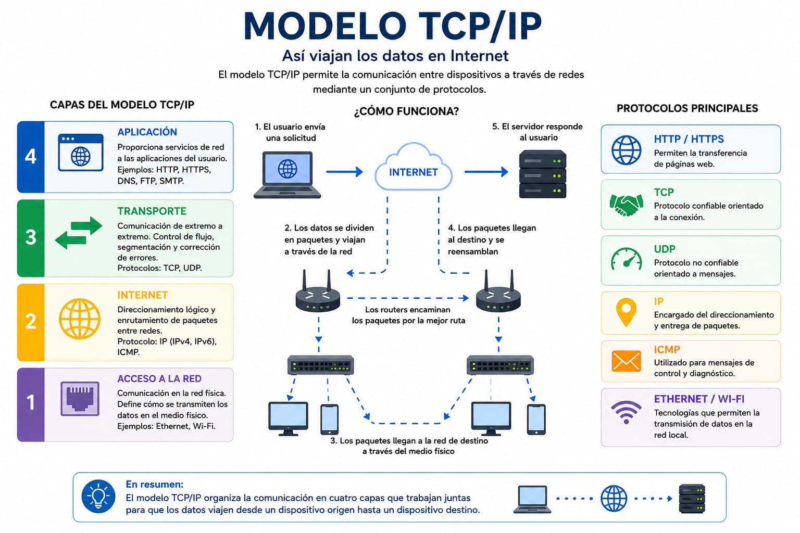
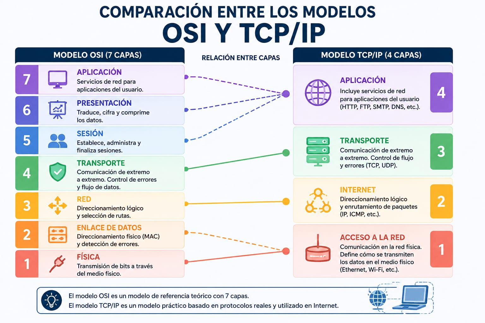
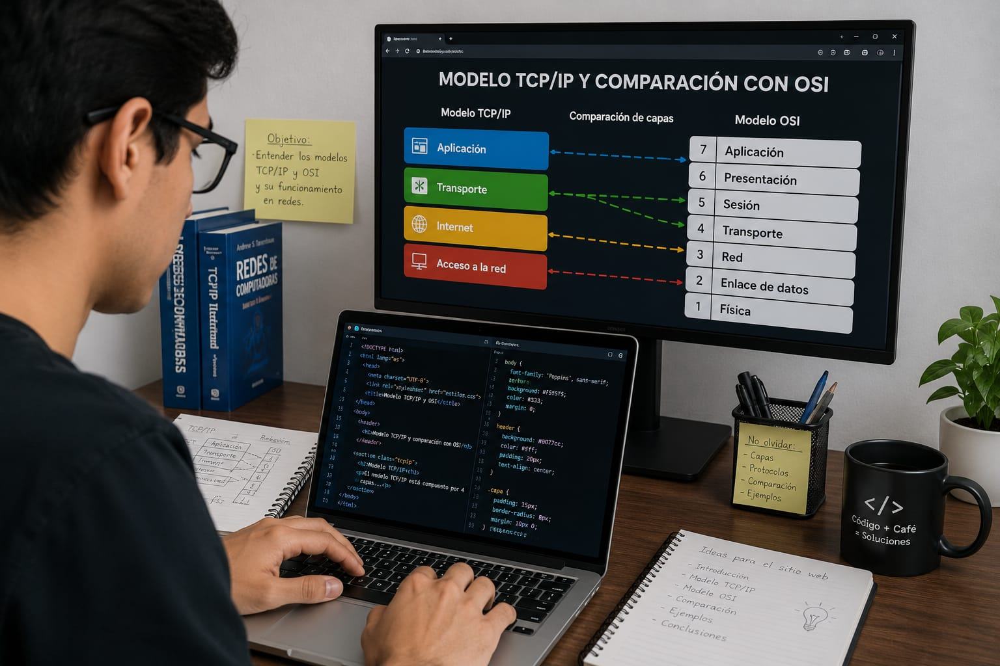

Estudiante: Emanuel Barrios Villarreal
Los modelos TCP/IP y OSI permiten comprender cómo se comunican los dispositivos dentro de una red informática. Estos modelos organizan los diferentes procesos que hacen posible el intercambio de información entre computadores, servidores y otros dispositivos.

Representación visual de los modelos TCP/IP y OSI mediante elementos relacionados con las redes informáticas.
Las redes informáticas permiten que diferentes dispositivos puedan comunicarse y compartir información. Para comprender cómo ocurre esta comunicación existen modelos que organizan los diferentes procesos necesarios para enviar y recibir datos.
Dos de los modelos más importantes son el modelo OSI y el modelo TCP/IP. El modelo OSI divide la comunicación en siete capas, mientras que TCP/IP utiliza una estructura de cuatro capas que está relacionada con los protocolos utilizados en Internet.
Conocer estos modelos es importante para comprender el funcionamiento de las redes, analizar los protocolos y facilitar la identificación de problemas de comunicación.
El modelo TCP/IP es un conjunto de protocolos que permite la comunicación entre dispositivos conectados a una red. Es fundamental para el funcionamiento de Internet y organiza las funciones de comunicación en diferentes capas.

Representación de las cuatro capas principales del modelo TCP/IP.
El modelo OSI es un modelo de referencia que divide la comunicación de una red en siete capas. Su objetivo es organizar y explicar las diferentes funciones que participan en la transmisión de información entre dispositivos.

Relación entre las capas del modelo TCP/IP y las siete capas del modelo OSI.
Aunque ambos modelos permiten comprender la comunicación en redes, presentan diferencias en la cantidad de capas, estructura y utilización. TCP/IP está orientado a los protocolos utilizados en redes actuales, mientras que OSI funciona principalmente como un modelo de referencia para comprender las funciones de una red.
| Característica | TCP/IP | OSI |
|---|---|---|
| Número de capas | 4 | 7 |
| Tipo | Modelo práctico basado en protocolos | Modelo de referencia |
| Uso principal | Internet y redes actuales | Estudio y comprensión de redes |
| Transporte | TCP y UDP | Capa de transporte |
| Capas superiores | Aplicación | Sesión, presentación y aplicación |
Un ejemplo sencillo ocurre cuando un usuario entra a una página web. La aplicación utiliza protocolos como HTTP o HTTPS para solicitar información. Los datos son transportados mediante protocolos como TCP y posteriormente IP participa en el direccionamiento de los paquetes.
En este proceso participan diferentes funciones de red. TCP/IP permite organizar estas funciones de manera práctica, mientras que OSI permite observarlas con mayor detalle mediante sus siete capas.

Ejemplo de una persona trabajando con tecnologías relacionadas con las redes informáticas.
El conocimiento de TCP/IP y OSI es importante para estudiantes y profesionales del área de sistemas y redes. Estos modelos permiten analizar la comunicación entre dispositivos, comprender los protocolos utilizados y localizar posibles problemas en diferentes partes de una conexión.
En proyectos de redes también es posible trabajar de manera colaborativa para configurar dispositivos, analizar conexiones y comprender cómo viajan los datos desde un equipo hacia otro.
Trabajo colaborativo relacionado con la implementación y análisis de redes informáticas.
El modelo TCP/IP y el modelo OSI son fundamentales para comprender el funcionamiento de las redes informáticas. Aunque tienen estructuras diferentes, ambos permiten organizar las funciones necesarias para que los dispositivos puedan comunicarse.
TCP/IP tiene una gran importancia debido a su utilización en Internet y en numerosas redes actuales. Por otra parte, OSI es especialmente útil como modelo de referencia para estudiar y analizar la comunicación entre dispositivos.
Comprender las diferencias entre ambos modelos permite analizar mejor las redes, comprender los protocolos y facilitar la solución de problemas de comunicación.